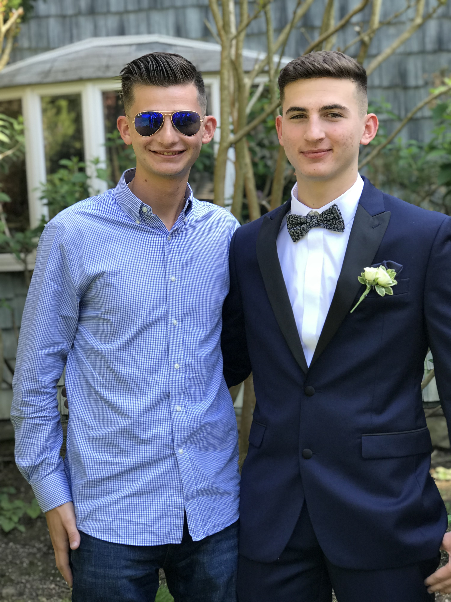

Alex Maruca
1320 S Dixie Hwy,Coral Gables,Fl,33146
(305)284-2211

About Me
My name is Alex Maruca and I am from Long Island NY.
I am currently a student at the University of Miami.
I am in the School of Communications with a major in Film
Production. I aspire to have a career in the entertainmnet
industry.
EDUCATION
Xavier High School, New York, New York
2018
University of Miami
Class of 2022
Work Experience
Eataly Flatiron
Summer 2018
- operated cashier at Lavazza Express
- scooped gelato
Engineers Country Club
Summer 2018
- stocked water and food supplies for golf course
The Creek Country Club
Summer 2019
- served as camp counselor for club memebrs' kids
Volunteer Experience
Ronald McDonald House
2012-2017
- Prepared home cooked meals for residents/guests twice a year
- Engaged and interacted with aproxmately forty to sixty residnets
Habitat for Humanity
June 2016 Asbury Park, NJ
- Assited in the cleanup and restoration of an elderly women's house and property
CFX Service Immersion Trip
July 2017 Tijuana, Mexico
- Worked with Espernaza Internation for one week with classmates
- Tasked with pouring and mixing cement into new houses
Skills
- Profiecient in multiple computer applications for communication
- Experienced working with children and pets
| New York Baseball Teams |
Championships |
| Mets |
2 |
| Yankees |
27 |
Changes
For More Information
Click Here
Click for photo